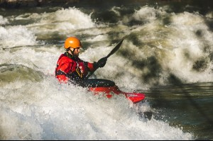
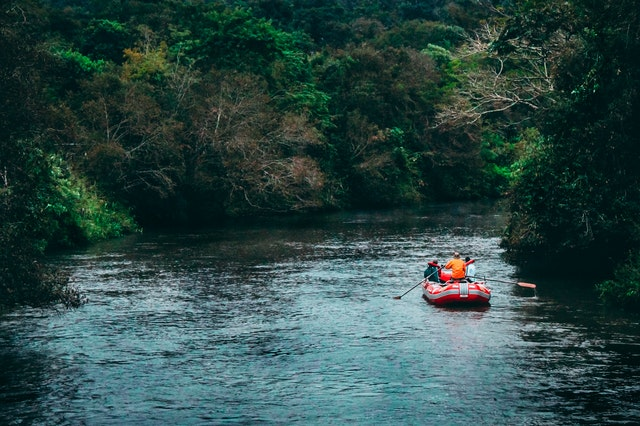

Dry Oar Rafting Company
We love white water rafting!
We believe that there is nothing like a river trip for realxing. That is why we subscribe to the Rafting Co. philopsphy of boating. Keeping your oars dry, for us, means taking time to look aroud and notice the beauty that surrounds the rivers we love.
We love white water rafting!
We believe that there is nothing like a river trip for realxing. That is why we subscribe to the Rafting Co. philopsphy of boating. Keeping your oars dry, for us, means taking time to look aroud and notice the beauty that surrounds the rivers we love.
We know you will love it too!
That doesn't mean we don't also like rapids. Opposites in all things are after all. We believe that the tenseness that comes when you are looking down the tongue of a big string of waves makes you appreciate the calm beautiful water that always follows even more.
Come run with us!
We invite you to come relax with us on one of the amazing rivers we visit. Check out our trips and let us know which one best suits you. We're waiting to hear from you!